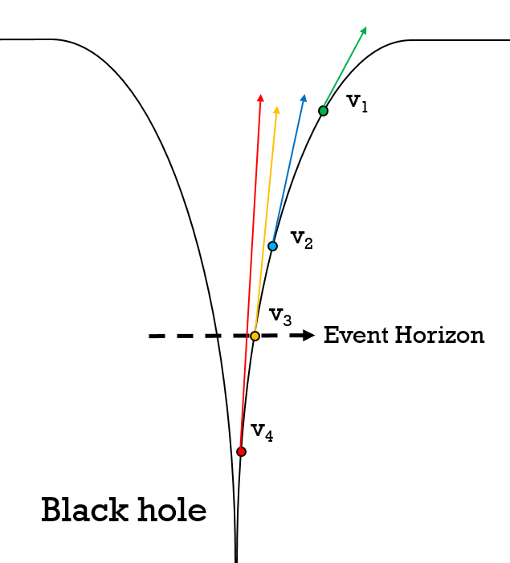
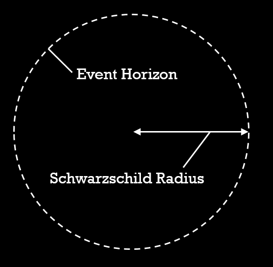
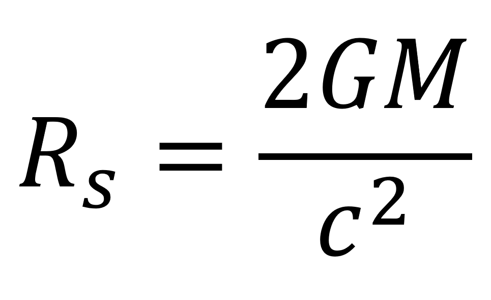

The definition of an event horizon is a boundary in spacetime beyond which events cannot affect an outside observer.
Now since events inside this boundary cannot affect anything outside, it should be intuitive that anything that enters this boundary cannot go back out. That's exactly what a black hole is.

To understand why this happens, take a look at the diagram on the right. The curve is
caused by the mass of the black hole at the bottom, and the slope of the curve
represents the gravitational strength. The force required to escape the gravitational
pull of a black hole is given from this formula:

This is the formula for escape velocity.
G is the gravitational constant.
M is the mass of the body.
r is the distance from the body.
In the diagram, objects green, blue, orange, red are at varying distances from the
black hole, and the arrows represent their escape velocity. The closer the object, the
higher the escape velocity (r is smaller, ve is bigger).

The green and blue objects can still escape, since they are outside the event horizon. The red is inside the event horizon, and has an escape velocity higher than that of the speed of light, and cannot escape.

The orange object is at the event horizon, and this means its escape velocity equals the speed of light. This distance from the black hole has a special name: the Schwarzchild radius. Any given mass has a Schwarzschild radius, and if it was compressed inside that radius, it would become a black hole.